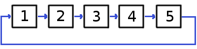

Дело было в ветхозаветные времена. Тогда Римская империя владела многими землями на севере и на западе и еще много где. Владела она в том числе и Иудеей. Заставляли римляне иудеев подчиняться и платить дань, налоги по-сегодняшнему. Не всем это нравилось. Часть активного населения собиралась в отряды, занималась грабежами и убийствами римских солдат. В одном из таких отрядов участвовал и Иосиф Флавий.
Однажды римское войско окружило отряд Флавия и взяли их в плен. Командир легионеров говорит повстанцам, что они уже надоели своим разбоем и он решил всех казнить, кроме одного. Правило будет такое. Пленные становятся в круг. Первого оставляют пока в живых, второго казнят. Третьего оставляют в живых, четвертого казнят. И так по кругу, пока не останется один. Его и отпустят.
Иосиф Флавий быстро решил задачу, занял нужное место и остался в живых. А может просто угадал. А может дело было совсем не так. Свидетелей то не осталось.
Короче, наша цель найти то место, в котором оказался тогда наш герой. Сколько было человек в отряде мы не знаем, поэтому нужно решить задачу в принципе для любого количества людей.
Представим задачу в виде связного списка, структуры данных Linked List. Связный список состоит из узлов, связанных друг с другом по кругу. Каждый узел - это один солдат, имеющий линк с соседним узлом. Узел в нашей функции это класс Nod, который имеет поле name, обозначающее номер узла, его имя и поле next, имеющее тип Nod или null. Это линк к соседнему узлу, которого может не быть. В начале выполнения функции задаем значение переменной cntr, это количество человек в отряде. Переменные head, midNode, lastNode типа Nod обозначают узлы связного списка. Сначала создаем связный список с количеством узлов, заданных пользователем. Встаем на узел head (номер 1), накрываем следующий за ним узел номер 2 (меняем связь со следующего узла на тот, что через него, на третий) операцией
head.next = head.next.next;и переходим с первого узла на следующий (теперь номер 3) операцией
head = head.next;и так далее до тех пор, пока линк на следующий узел будет показавать на самого себя
while(head.next != head)Номер этого оставшегося узла и показываем. 
Здесь схема поиска нужного места для пяти узлов.
Ниже код функции нахождения правильной позиции и реализация. Код работает для целых положительных чисел.
class Nod{
public name: string;
public next: Nod | null = null;
constructor(public n: string){
this.name = n;
}
}
function flav(){
let cntr: number = Number((document.getElementById("input1") as HTMLInputElement).value); //количество человек
let midNode: Nod;
let lastNode: Nod;
let head: Nod = new Nod("1");
lastNode = new Nod(String(cntr));
head.next = lastNode;
lastNode.next = head;
while(cntr > 2){ //заполняем цепочку нод
midNode = new Nod(String(--cntr));
midNode.next = lastNode;
head.next = midNode;
lastNode = midNode;
}
//пока head не начинает показывать на себя накрываем ноды через одну
while(head.next != head){
head.next = head.next.next;
head = head.next;
}
//можем просмотреть кто остался
console.log("оставшаяся нода: " + head.name);
(document.getElementById("input3") as HTMLInputElement).value = head.name;
}
Количество солдат в отряде:
Номер нужного места: